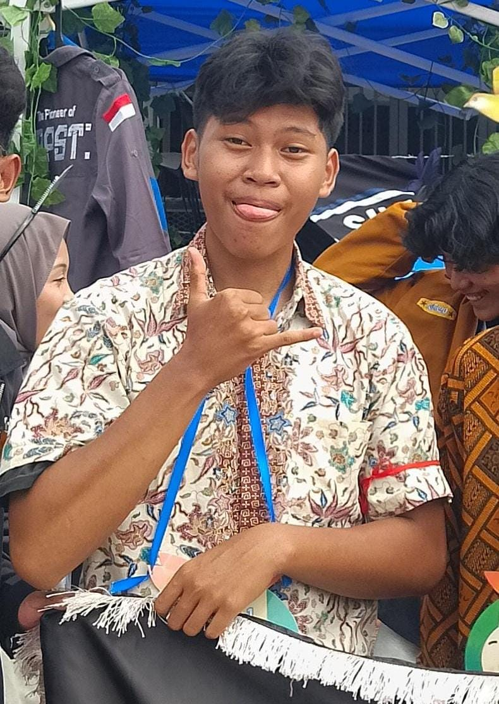

Muhammad Hadid Mubarok
Ketua
| NIM | : | 0110226070 |
| Prodi | : | Teknik Informatika |
| TTL | : | Depok, 29 April 2008 |
| Hobi | : | Boxing, Baca Komik, Film, Musik, Olahraga, Game |
| : | @hadid9155 | |
| : | muhammadhadidmubarok@gmail.com |
Praktikum Desain UI/UX
Selamat datang di halaman praktikum mandiri Kelompok 12. Halaman ini menyajikan profil dan biodata lengkap dari para anggota kelompok kami dalam mata kuliah Desain UI/UX dan Pemrograman Web di STT Terpadu Nurul Fikri.

| NIM | : | 0110226070 |
| Prodi | : | Teknik Informatika |
| TTL | : | Depok, 29 April 2008 |
| Hobi | : | Boxing, Baca Komik, Film, Musik, Olahraga, Game |
| : | @hadid9155 | |
| : | muhammadhadidmubarok@gmail.com |
| NIM | : | 0110226174 |
| Prodi | : | Teknik Informatika |
| TTL | : | Jakarta, 15 Februari 2007 |
| Hobi | : | jalan-jalan |
| : | @zaa.illm | |
| : | ilmigaza@gmail.com |
| NIM | : | 0110226001 |
| Prodi | : | Teknik Informatika |
| TTL | : | Sukabumi, 01 Maret 2007 |
| Hobi | : | Scrolling |
| : | @mhmdhmdni01 | |
| : | muhammad.muhammadhamdani22@gmail.com |
| NIM | : | 0110224214 |
| Prodi | : | Teknik Informatika |
| TTL | : | Jakarta, 08 Oktober 2006 |
| Hobi | : | Main Games |
| : | @ramaakok | |
| : | mgar0810@gmail.com |